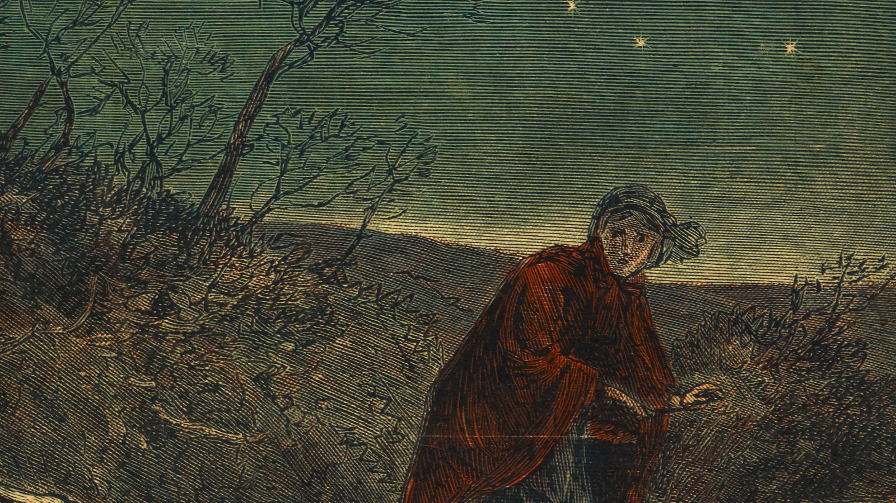
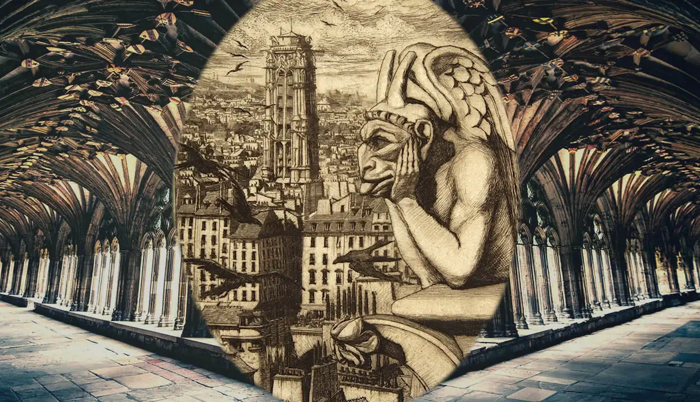

The gothic subculture emphasizes individualism, melancholy, and sensuality.
It may also include
an interest in occult and mystical themes.
Goths often express their feelings
and thoughts through art, music,
and poetry that reflect their
inner world and experiences.
The gothic subculture
draws inspiration from literary works such as the writings of Edgar Allan Poe, Bram Stoker's
"Dracula," Oscar Wilde, and other authors whose works often reflect the dark and mystical aspects of
human nature.
Philosophy and Worldview

The themes and motifs of gothic literature are intrinsic to the gothic subculture, influencing its
art, music, and fashion. Enthusiasts of the gothic subculture are drawn to the exploration of the
darker aspects of human existence, echoing the journeys of characters in gothic novels. Iconic
imagery from gothic literature, such as vampires, haunted castles, and eerie landscapes, have left
an indelible mark on the visual aspects of the subculture. These elements frequently appear in
gothic art, fashion, and events like gothic-themed parties and festivals.
Literary Influence
.jpeg)
Gothic fashion is an eccentric style distinguished by its preference for dark shades, primarily
black, and dramatic elements. It often includes long dresses, leather garments, mesh fabrics, and
numerous metallic accessories. Gothic fashion emphasizes individuality, art, and mystique. It
incorporates distinctive features such as accentuating the eyes with black cosmetics, often dyeing
hair in dark shades, and accessories that may include symbols of mysticism and romance. This fashion
style aims to express the dark and mystical aspects of human nature and inspire creative
self-expression.
Gothic Style
Tolerance and communication are essential principles within the gothic subculture. Goths typically
exhibit openness and respect for diversity and alternative lifestyles. In this subculture, people
with various backgrounds and interests find common ground, with gothic events, clubs, and festivals
serving as places to connect and share their passions.
Tolerance in the gothic subculture involves embracing individuality, irrespective of one's style,
appearance, or beliefs. This subculture encourages respect for differences and mutual support.
Overall, these elements contribute to the gothic subculture's identity as an open and supportive
community where each member has the right to self-expression and self-identification.
Communication


Social gatherings in the gothic subculture play a significant role and serve as places where people
of this subculture can come together and express themselves. Gothic clubs, concerts, festivals, and
meetings all create opportunities for goths to share their interests and passion for music, fashion,
and art.
At these events, goths often find support and understanding from like-minded individuals who share
similar tastes and values. These are places where they can enjoy gothic music, exchange experiences
in fashion and personal style, and create art that reflects their dark and mystical inspirations.
Social gatherings also contribute to the strengthening of friendships and the formation of a
community that expresses support and respect for diversity. These events provide a platform for
creativity and self-expression, making them a crucial part of the gothic subculture.
Social gatherings